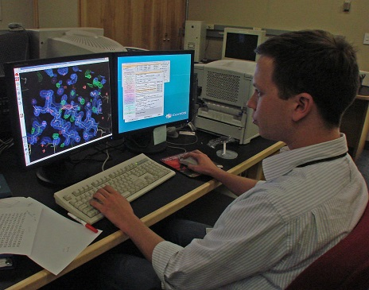
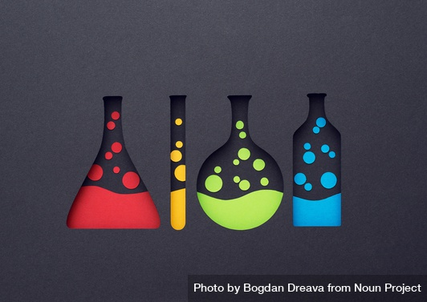
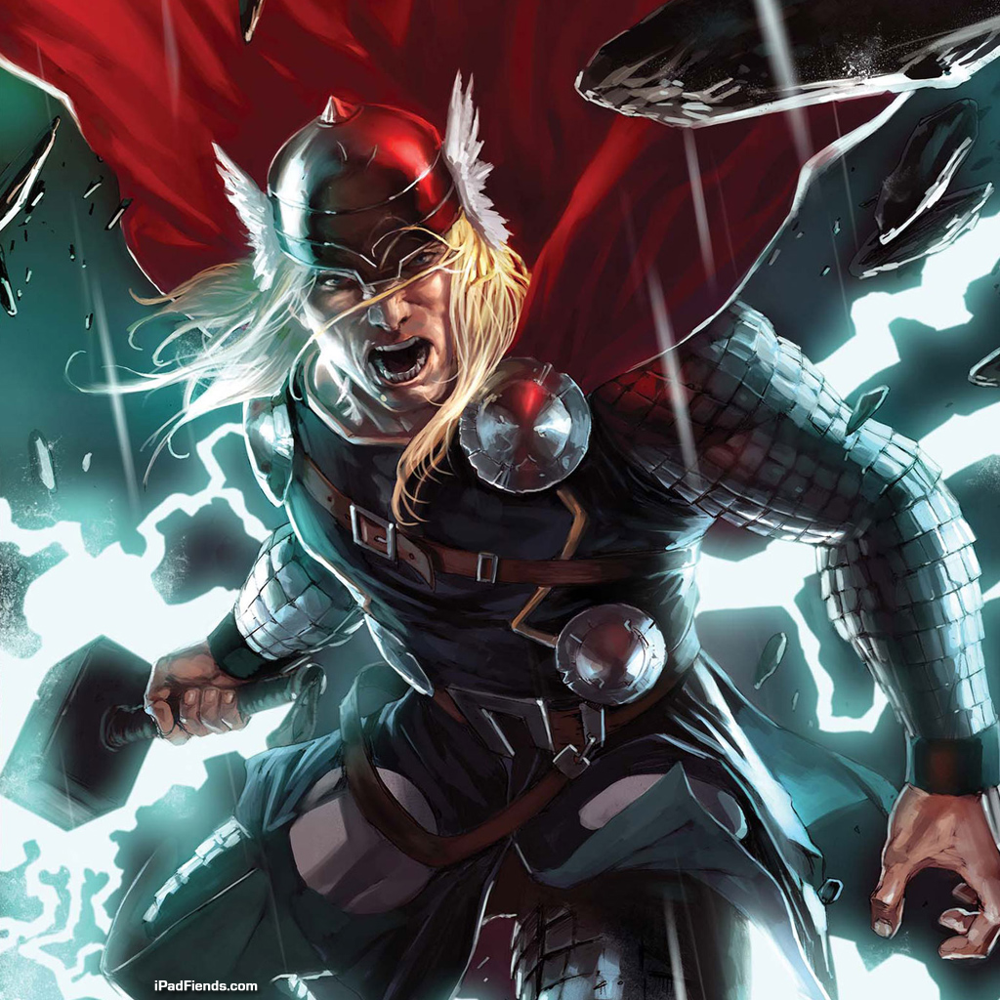
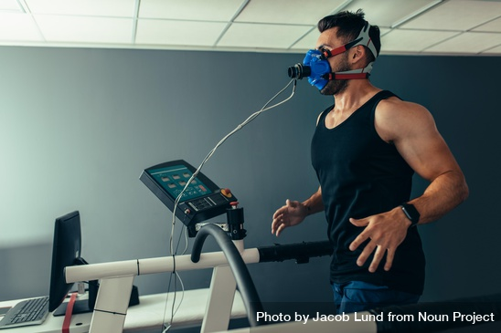

Portfolio
I have performed various research projects and learned from, studied, and created computer science projects during my time at high school. I plan to continue to advance my knowledge to complete interesting and complex programs in the future.
-
Climate Pros' Watchtower
During my senior year, I took a data science internship at Climate Pros to assist in the development of their Watchtower 2.0 program and user interface. While the code was too advanced for me, I did pick up some invaluable machine learning knowledge that I can use toward future projects.
-
Drug Discovery SIR
During my junior year, I participated in a research project studying possible drug variations of Aricept to help slow the progression of Alzheimer's disease. I worked with a partner over the course of the semester studying different protein structures that mirrored the affects of the Aricept drug but targetted more receptors in degenerative neurons.
-
Chemical Reaction Emulator
As apart of a Computational Science course, I created a Chemical Reaction emulator that could analyze an inputted reaction and provide a visual display, with accompanying graphs. While it only worked under certain and ideal scenarios, it can be modified to display more diverse or intricate reactions.
-
Projectile Motion Emulator
Also apart of the Computational Science course, I created a physics simulator that could display an object in motion given a starting location and velocity in 3D space. I could also add springs to connect particles to each other, while also altering their mass.
-
AWRAP Final Project
In an Ancient World Religions and Philosophies course, I wrote and presented a project analyzing the mythological origins of the Marvel Cinematic Universe's interpretation of Thor and other Norse mythology. I went into deal analyzing the differences between the MCU version, original mythological text, and the Marvel comics version and possible reasons for the changes.
-
Alpha STEM Research Project
In my freshman year, I performed a guided research project studying the effects of physical performance on intelligence in high school students. I wrote a detailed research paper and presented the project under the guidance of the Lane Tech Alpha STEM program.